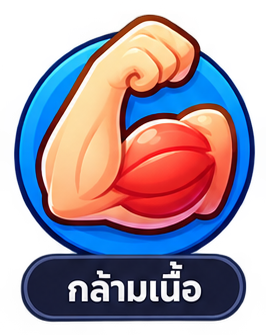
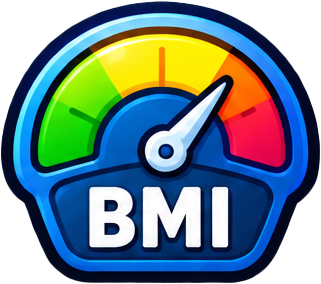
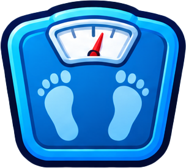

กำลังโหลดตัวละคร…
เป้าหมายวันนี้62%
ไขมัน (%)
—

กล้ามเนื้อ (กก.)
—

BMI
—

น้ำหนัก (กก.)
—
 Leaderboard
Leaderboard
อันดับผู้เล่นคะแนนรวม
YOUR NEXT ADVENTURE
เป้าหมาย
คะแนนสะสม★ 0
จุดหมายถัดไป★ 1,000
อีก 1,000 แต้ม เปิดจุดหมายใหม่
ทุกก้าวเล็ก ๆ พาเราไปได้ไกล
กำลังอัปเดตคะแนนสะสม…
ปฏิทิน
ตุลาคม 2026
ออกกำลังกายแล้ว
วันนี้
🔥 สรุปเดือนนี้
21วันที่ออกกำลังกาย
1,240แคลอรีที่เผาผลาญ
820นาทีรวม
ทัวร์นาเมนต์
ยังไม่ได้โหลด
การสร้างและจัดการรายการ รวมถึงภารกิจ อยู่ที่หน้าเว็บผู้ดูแล
ออกไปขยับตัว
วิ่งของฉัน
เส้นทางเริ่มที่ก้าวแรก
กดเริ่มวิ่ง แล้วอนุญาตตำแหน่ง GPS
กำลังโหลดแผนที่ถนน…
00:00:00เวลาวิ่ง
0.00ระยะทางกิโลเมตร
เพซเฉลี่ย—นาที/กม.
จำนวนก้าว0ก้าว